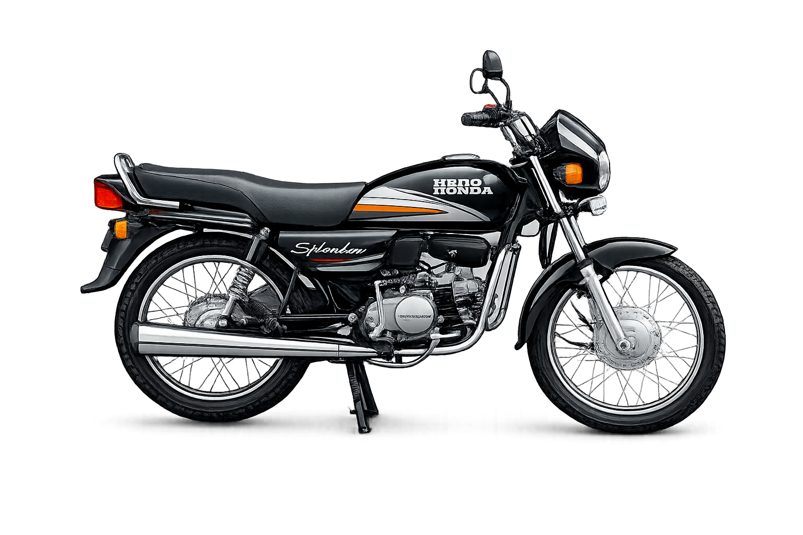
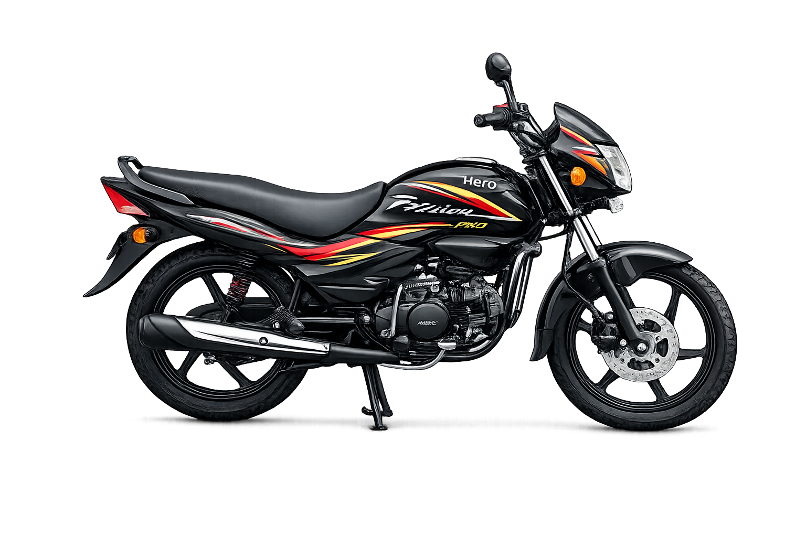
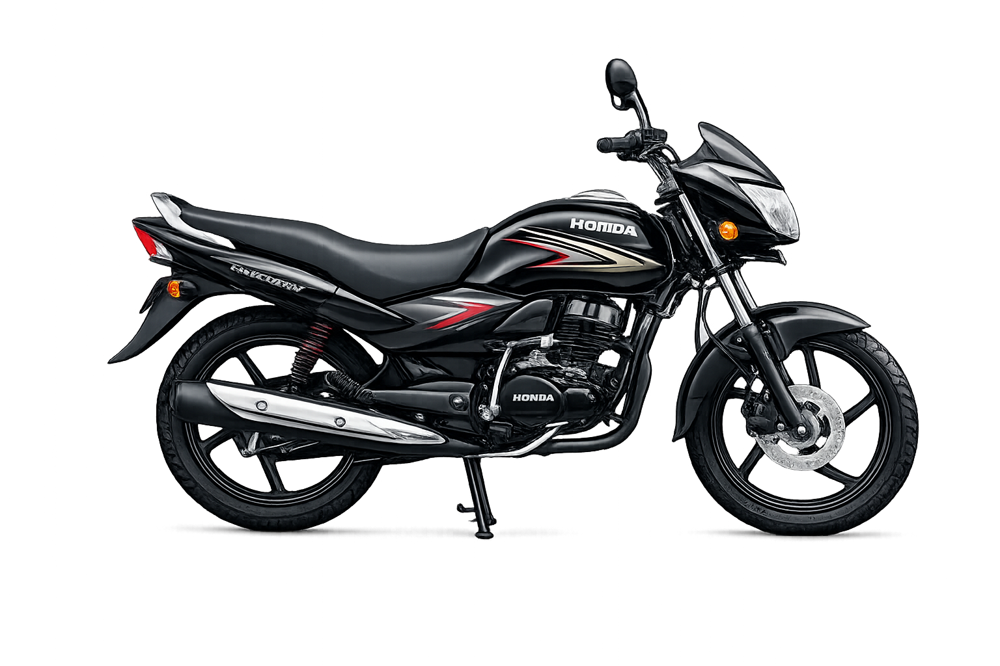

Hero Honda Splendor

The Hero Honda Splendor reshaped daily commuting in India from the 1990s onward. It became one of the country's highest-selling bikes because of strong mileage, low maintenance, and long-term reliability.
Best for daily city travel, low maintenance, and high mileage.
Students, office commuters, and riders prioritizing fuel efficiency and affordable ownership.
Lightweight handling, easy serviceability, and excellent value.

The Hero Honda Splendor reshaped daily commuting in India from the 1990s onward. It became one of the country's highest-selling bikes because of strong mileage, low maintenance, and long-term reliability.

The Passion Pro is a popular commuter motorcycle known for its reliability, fuel efficiency, and comfortable riding experience. Designed for daily use, it features a lightweight frame, a smooth 110cc engine, and stylish graphics that give it a modern look while maintaining practicality. With its durable build, good mileage, and low maintenance cost, the Passion Pro has become a trusted choice for riders who want an affordable and dependable bike for city commuting.

The Honda Unicorn is a well-known commuter motorcycle appreciated for its smooth performance, durability, and comfortable ride. Powered by a reliable 150–160cc engine, it delivers good mileage while maintaining strong power for both city and highway riding. With its simple yet stylish design, stable handling, and low maintenance cost, the Unicorn has become a trusted choice for riders who want a dependable and long-lasting daily commuter